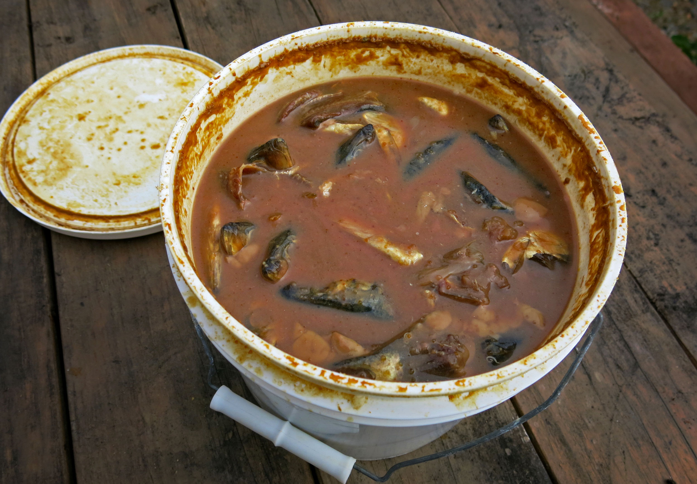

Fermented Fish
Return to homepage

Fermented Fish...
A very easy and nutritious probiotic meal to prepare.
Ingredients
- 1/2 Cup Whey dripped from yoghurt or kefir
- 3 Whole Fish Herring, Salmon or mackerel (small fatty fish)
- 8 - 10 Whole Perpper corns
- 1/4 White onion Sliced pieces (optional)
- 1/2 Tsp Coriander seeds
- 1/2 Tsp Dill seeds
- 3-4 Bay leaves
- 1/2 Cup Filtered water
Instructions
- Skin the fish and remove the bones, cut into mouth size pieces
- Put the pieces of the fish into the jar mixing with slightly crushed peppercorns, a few slices of white onion (optional), coriander seeds, bay leaves and dill seeds or dill herb
- In a separate jug add ½ litre of water and dissolve 1 tablespoon of sea salt and 3-4 tablespoons of your homemade whey. Pour this brine into the jar with the fish until the fish is completely covered; if the fish is not covered just add more water
- Close the jar tightly and leave to ferment for 3-5 days at a room temperature, then store in the fridge
- This fish does not keep long, so consume in the next few days. Serve with avocado, lemons and onions